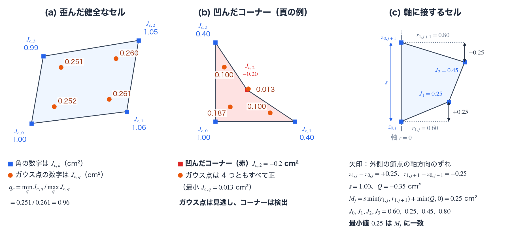

メッシュと幾何
TENRYU の計算領域は、1D の半径方向の格子、または 2D 軸対称 RZ（axisymmetric R–Z）のメッシュとして構築する。1D は一様（uniform）または傾斜配置（graded zoning）のゾーニングと、球・円筒・平面の測度（measure。体積と面積の取り方）を備え、デッキ（deck。TENRYU の入力となる Python ファイル）は、材料の領域（region。体積分率（volume fraction）を座標の関数として Geometry.volfrac で指定する。領域と体積分率）、前駆プラズマ（preformed plasma）のコロナ、外側のボイド（void）セルを割り当てる。2D は、構造矩形（structured rectangular）、球面極座標（spherical-polar half-plane）、箱の中の極座標（polar-in-box）、そして CSR（compressed sparse row）接続によるマルチブロック（multiblock）の各メッシュ族（mesh family）を備え、どのメッシュ族からも、物理カーネルへ、セルの RZ 体積、コーナー（corner。流体のページで定義する）の幾何、節点（node）・セル・面の接続関係（mesh topology）の 3 つを同じ形で渡す。メッシュの品質を表す量（許容性の判定（admissibility check）、コーナーヤコビアン（corner Jacobian）、ガウス点ヤコビアン（Gauss-point Jacobian）、軸マージン（axis margin））は用語の節で定義する。
1D メッシュと領域
一様・傾斜配置のゾーニング、材料の領域（体積分率で指定）、ボイド、コロナ層。
2D RZ メッシュ族
矩形・極座標・箱の中の極座標・マルチブロックの RZ メッシュ。
ALE: リゾーニングとリマップ
ALE（arbitrary Lagrangian–Eulerian、任意ラグランジュ・オイラー法）によるメッシュの最適化（リゾーン、rezone）と、連成した状態の保存的な転写（リマップ、remap）。
メッシュ品質の保護
生成器は、区間が隙間なくつながっていて各区間の幅が正であること、節点が狭義単調（strictly monotonic）に増えること、極座標では θ の節点列が端点（θmin と π）に届くことを検査し、満たさなければ明示的に失敗する。極座標の軸の節点は R=0 に厳密に置く。
2D RZ では、生成した直後と、ラグランジュ段（Lagrangian step）の開始時、予測段（predictor）の後、修正段（corrector）の後に、すべてのセルについて、向き（orientation。平面の符号付き面積の符号）と RZ 体積が正で有限であること、セルの辺が互いに交差していないことを検査する。この検査は常に働く。満たさないときは、Numerics.hydro.driver_full_step_retry_enabled または Numerics.hydro.mesh_geometry_soft_fail_enabled（どちらも既定は False）が真ならステップを再試行し、偽ならエラーで停止する。
これに加えて、セルの形が体積・力・リマップの演算子へ渡してよい状態かどうかを、コーナーヤコビアン、ガウス点ヤコビアン、RZ 体積、軸マージンで判定する許容性の判定がある。ALE を有効にしたときの発動と受理の判定は、既定で働く。ラグランジュ段の候補の位置をこれらの量で事前に判定する検査（時間刻みの制限を含む）は、既定ではすべて無効で、キーで有効にする。各量の下限（floor）に達する候補は、そのステップを拒否して、より短い時間刻みで再試行する。これらは物理のモデルではなく、無効な幾何のうえで体積、力、リマップを評価しないための条件である。各量の定義と、判定ごとの下限、キー、既定値は用語の節にまとめる。
この計算で使う用語
2D RZ のメッシュの品質は、セルの RZ 体積 \(V_c\)、コーナーヤコビアン \(J_{c,k}\)、ガウス点ヤコビアン \(J_{c,q}\)、軸マージン \(M_j\) の 4 つの量で測る。ここで \(c\) はセル、\(k=0,\dots,3\) はセルのコーナー（頂点）、\(q\) は 2×2 のガウス点、\(j\) は軸に接するセル行（\(i=0\)）のセルの添字である。座標は \((r,z)\)（cm）で、頂点を \((r_0,z_0),\dots,(r_3,z_3)\) と番号づける。
許容性の判定
許容性の判定（admissibility check）は、節点の配置が、体積・力・リマップの演算子へ渡してよい幾何かどうかを調べる検査である。調べるのは、現在のメッシュと、節点を動かした後の候補のメッシュである。反転したセルやつぶれたセルでは、RZ 体積が 0 以下になる。コーナーが反転したセルでは、セルの内部の一部で、局所的な面積の倍率 \(J\)（コーナーヤコビアンの項で定義する）が負になる。どちらの場合も、密度 \(\rho=M_c/V_c\)（\(M_c\) はセルの質量）やコーナーの力が意味を失う。そのような配置を演算子へ渡さないための条件であり、物理のモデルではない。
判定する量は 4 つである。RZ 体積 \(V_c\)（cm³）は、セルの断面の多角形を軸のまわりに回転した立体の体積で、四辺形では
$$ V_c=\frac{\pi}{3}\sum_{k=0}^{3}(r_k+r_{k+1})(r_kz_{k+1}-r_{k+1}z_k) $$である（頂点が反時計回りに並ぶとき正。\(k+1\) は 4 を法とする）。残りの 3 つは、次の 3 項で定義する。
候補のメッシュには、位置だけでなく、現在の位置から候補への節点の移動の経路を調べる判定がある。節点を直線 \(\mathbf x(\sigma)=\mathbf x_{\rm old}+\sigma(\mathbf x_{\rm new}-\mathbf x_{\rm old})\)（\(0\le\sigma\le1\)）に沿って動かすと、\(J_{c,k}\) と \(J_{c,q}\) は \(\sigma\) の 2 次式、\(V_c\) は 3 次式になる。したがって、経路上の最小値は端点と導関数の零点の値だけから閉じた式で求まり、移動の途中で一時的に反転して終点で戻るセルも見逃さない。下限に最初に達する \(\sigma\) の、セルをまたいだ最小値を \(\sigma_{\rm safe}\) と書く。
判定ごとの下限、キー、既定値は次のとおりである。主な判定を示す。
- 幾何の検査（既定で働く）。生成の直後と、ラグランジュ段の開始時、予測段の後、修正段の後に、すべてのセルで \(V_c>0\)、平面の符号付き面積が正、ともに有限であること、セルの辺が交差しないことを確かめる。キーはない。失敗したときの動作は上の節に書いた。
- ALE の発動、セル品質（ALE を有効にしたとき既定で働く）。実行間隔（
Numerics.ale.every_n_steps、既定 5）ごとに、全セルの品質（cell quality）\(q_c\)（ガウス点ヤコビアンの項で定義する）の最小値を評価し、Numerics.ale.quality_threshold（既定 0.2）を下回るとリゾーンを実行する。 - ALE の発動、軸（ALE を有効にしたとき既定で働く）。\(\min_jM_j<\alpha\,M_{\rm init}\) のとき、実行間隔を待たずにリゾーンを起動する。\(M_{\rm init}\) は最初に評価したときの \(\min_jM_j\)、\(\alpha\) は
Numerics.ale.preventive_axis_guard_fraction（既定 0.1、0 で無効）である。 - ALE の候補の受理（ALE を有効にしたとき既定で働く）。リゾーンで動かした候補は、\(J_{c,q}<0\)、\(J_{c,k}\le0\)、\(M_j\le0\) のどれかがあれば反転とみなして受理しない。混合率を小さくして試し直し、通らなければリゾーンを行う前の状態へ戻す（許容性と受理判定）。反転とみなす範囲を、次のキーで広げられる。
Numerics.ale.reject_zero_gauss_j（既定False）を真にすると、\(J_{c,q}\le\max(10^{-30},\,r_J\max_qJ_{c,q})\) も反転とみなす（\(r_J\) はNumerics.ale.zero_gauss_j_floor_rel、既定 \(10^{-8}\)。\(10^{-30}\) の単位は cm²）。Numerics.ale.corner_post_tangle_strict_floor_enabled（既定False）を真にすると、\(J_{c,k}\le\max(10^{-30},\,\epsilon_J\max_k|J_{c,k}|)\) も反転とみなす（\(\epsilon_J\) はNumerics.hydro.corner_jacobian_floor_eps、既定 \(10^{-6}\)）。コーナーの判定そのものはNumerics.ale.corner_jacobian_post_tangle_enabled（既定True）で切り替える。 - ラグランジュ段の経路の判定、時間刻みの制限（既定で無効）。予測段と修正段で節点を動かす前に、経路上で \(J_{c,k}\)、\(J_{c,q}\)、\(V_c\) が、経路の始点の値の \(10^{-8}\) 倍を割らないかを調べる（軸に接するセルには、軸用の述語も加わる）。割る経路があれば、そのステップを拒否し、時間刻みを \(\alpha_{dt}\,\sigma_{\rm safe}\,\Delta t_s\) に縮めて再試行する（\(\Delta t_s\) は予測段で \(\Delta t/2\)、修正段で \(\Delta t\)）。有効化は
Numerics.hydro.mesh_quality_dt_cfl_enabled（既定False）である。量ごとの有効化はmesh_quality_dt_corner_j_enabled、mesh_quality_dt_gauss_j_enabled、mesh_quality_dt_rz_volume_enabled（既定はすべてTrue）、下限の相対値はmesh_quality_dt_corner_j_floor_rel、mesh_quality_dt_gauss_j_floor_rel、mesh_quality_dt_rz_volume_floor_rel（既定はすべて \(10^{-8}\)）、軸用の述語はmesh_quality_dt_axis_margin_additive（既定True）、\(\alpha_{dt}\) はmesh_quality_dt_safety_alpha（既定 0.5）である。 - ラグランジュ段の位置の確定前の判定（既定で無効）。候補の位置を確定する直前に、上と同じ経路の検査を、量ごとに有効にして行う。有効化は
Numerics.hydro.in_hydro_corner_j_guard_enabled、in_hydro_gauss_j_guard_enabled、in_hydro_rz_volume_guard_enabled（既定はすべてFalse）である。下限は、始点の値の \(\epsilon_J\) 倍（\(J_{c,k}\)。\(\epsilon_J\) はcorner_jacobian_floor_eps、既定 \(10^{-6}\)）、in_hydro_gauss_j_floor_rel倍（\(J_{c,q}\)、既定 \(10^{-8}\)）、in_hydro_rz_volume_floor_rel倍（\(V_c\)、既定 \(10^{-8}\)）である。下限に達する候補は、そのステップを拒否し、時間刻みを縮めて再試行する。 - 流体計算の前の ALE の発動（既定で無効）。演算子分割の前に、予測される 1 ステップの節点の動き \(\mathbf x(\tau)=\mathbf x^0+\tau\mathbf v^0\)（\(0\le\tau\le\Delta t\)）の上で、各コーナーの \(J_{c,k}\) が下限 \(\epsilon_JJ_{c,k}^0\) に達するまでに進める割合を求め、その全コーナーでの最小値が
Numerics.hydro.corner_jacobian_ale_trigger_scale（既定 0.5）を下回るなら ALE を起動する。有効化はNumerics.hydro.corner_jacobian_ale_trigger_enabled（既定False）、\(\epsilon_J\) はcorner_jacobian_floor_eps（既定 \(10^{-6}\)）である。 - 軸マージンによる時間刻みと速度の制限（既定で無効）。ステップの間に \(M_j\) が現在の値の \(f\) 倍を下回らないように、時間刻み（
Numerics.hydro.axis_margin_dt_floor_fraction、\(f\)）か、\(i=1\) の節点の半径方向の速度（Numerics.hydro.axis_motion_floor_fraction、\(f\)）を縮める。どちらも既定は 0 で、無効である。
経路の判定や位置の確定前の判定が下限に達する候補を見つけて、ステップを拒否したとき、Numerics.hydro.driver_full_step_retry_enabled が真なら時間刻みを縮めて再試行し、偽ならエラーで停止する。
コーナーヤコビアン
コーナーヤコビアン（corner Jacobian）\(J_{c,k}\) は、セル \(c\) のコーナー \(k\) で、その頂点から出る 2 辺のベクトルの外積である（図A(a)(b)）。
$$ J_{c,k}=(\mathbf x_{k+1}-\mathbf x_k)\times(\mathbf x_{k-1}-\mathbf x_k) =(r_{k+1}-r_k)(z_{k-1}-z_k)-(z_{k+1}-z_k)(r_{k-1}-r_k) $$ここで \(\mathbf x_k=(r_k,z_k)\)、添字は 4 を法とし、外積は \((r,z)\) 平面の 2 次元の外積である。単位は cm² である。\(J_{c,k}\) は 2 辺の長さの積と、そのコーナーの内角の正弦の積に等しい。頂点を反時計回りに並べたセルでは、凸なコーナーで正、内角が 180° を超える凹んだコーナーで負、コーナーがつぶれると 0 になる。頂点を時計回りに並べるメッシュ（球面極座標の三角形扇や五角形帯を含むもの）では、符号を反転して、凸なコーナーが正になるようにそろえる。
セルの 4 節点の双一次写像（bilinear map。次項で定義する）のヤコビアンは、基準の正方形の座標について双一次なので、セル全体での最小値は 4 つのコーナーのどれかで取られ、その値がコーナーヤコビアンである。したがって、4 つの \(J_{c,k}\) がすべて正であることは、セルの境界を含めてどこでも写像が反転しないための必要十分条件になる。
コーナーヤコビアンは、ガウス点ヤコビアンが見逃す反転を検出する。たとえば、1 cm × 1 cm の正方形の頂点 \((1,1)\) を対角線に沿って \((0.4,0.4)\) へ動かすと、そのコーナーの \(J_{c,k}\) は \(-0.2\) cm² になり、このコーナーの内角は 180° を超える。一方、4 つのガウス点の \(J_{c,q}\) はすべて正のままで、最小値は 0.013 cm² である（図A(b)）。

コーナーヤコビアンの下限は、判定ごとに違う（許容性の判定の一覧）。リゾーン後の候補では、既定で \(J_{c,k}\le0\) を反転とみなす。ラグランジュ段の経路の判定と、流体計算の前の ALE の発動は、始点の値に対する相対値を下限にする。
ガウス点ヤコビアン
ガウス点ヤコビアン（Gauss-point Jacobian）\(J_{c,q}\) は、セルの 4 節点を基準の正方形 \([-1,1]^2\) へ結ぶ双一次写像
$$ r(\xi,\eta)=\sum_{k=0}^{3}N_k(\xi,\eta)\,r_k,\qquad z(\xi,\eta)=\sum_{k=0}^{3}N_k(\xi,\eta)\,z_k, $$ $$ N_0=\tfrac{(1-\xi)(1-\eta)}{4},\quad N_1=\tfrac{(1+\xi)(1-\eta)}{4},\quad N_2=\tfrac{(1+\xi)(1+\eta)}{4},\quad N_3=\tfrac{(1-\xi)(1+\eta)}{4} $$のヤコビアン
$$ J(\xi,\eta)=\frac{\partial r}{\partial\xi}\frac{\partial z}{\partial\eta}-\frac{\partial r}{\partial\eta}\frac{\partial z}{\partial\xi} $$を、2×2 のガウス求積の 4 点 \((\xi,\eta)=(\pm1/\sqrt3,\pm1/\sqrt3)\) で評価した 4 つの値である（図A(a)(b)）。単位は cm² である。\(J(\xi,\eta)\) は \(\xi\) と \(\eta\) について双一次なので、2 点のガウス求積は \(J\) を厳密に積分し、4 つの値の和はセルの平面の符号付き面積に等しい。各ガウス点の値は、4 つのコーナーヤコビアンの加重平均の 1/4 である（\(4J_{c,q}=\sum_kw_{qk}J_{c,k}\)）。重み \(w_{qk}\) は正で和が 1 であり、そのガウス点に最も近いコーナーが 0.622、隣り合う 2 つのコーナーが 1/6 ずつ、向かい合うコーナーが 0.045 である。したがって、\(J_{c,k}\) がすべて正ならすべての \(J_{c,q}\) が正になるが、逆は成り立たない（前項の例）。
セルの品質 \(q_c\) は、4 点の値の最小値と最大値の比である（図A(a)）。
$$ q_c=\frac{\min_qJ_{c,q}}{\max\left(\max_qJ_{c,q},\ 10^{-30}\,\mathrm{cm^2}\right)} $$\(q_c=1\) は平行四辺形で、セルが歪むほど小さくなり、\(J_{c,q}\) に負の値があれば \(q_c\le0\) になる。三角形や五角形のセルをもつメッシュでは、2×2 のガウス点が使えないので、コーナーヤコビアンから \(q_c\) を作る（単一ブロックでは \(\min_kJ_{c,k}/\max_kJ_{c,k}\)、マルチブロックでは各コーナーの \(J_{c,k}\) を 2 辺の長さの積で割った値の最小値）。
\(q_c\) は、ALE のリゾーンを起動する指標（\(\min_cq_c<\)Numerics.ale.quality_threshold、既定 0.2）になる。\(J_{c,q}<0\) は、リゾーン後の候補を受理しない条件のひとつである。ラグランジュ段の経路の判定には、始点の値に対する相対値（既定 \(10^{-8}\)）を下限とする \(J_{c,q}\) の判定がある。キーと既定値は許容性の判定の一覧にある。
軸マージン
軸マージン（axis margin）\(M_j\) は、軸（\(r=0\)）に接するセルが、節点の移動で反転せずにいられる余裕を表す量で、そのセルの 4 つのコーナーヤコビアンの最小値を、軸の節点が \(r=0\) に固定されていることを使って閉じた式で書いたものである。軸に接するセル行（\(i=0\)）のセル \(j\) の頂点は \((0,z_{0,j})\)、\((r_{1,j},z_{1,j})\)、\((r_{1,j+1},z_{1,j+1})\)、\((0,z_{0,j+1})\) で、添字は（半径方向、軸方向）の節点の番号である（図A(c)）。
$$ s=z_{0,j+1}-z_{0,j},\qquad Q=r_{1,j}(z_{1,j+1}-z_{0,j+1})-r_{1,j+1}(z_{1,j}-z_{0,j}),\qquad M_j=s\,\min(r_{1,j},r_{1,j+1})+\min(Q,0) $$\(s\) は軸上の辺の長さ、\(Q\) は外側の 2 節点の軸方向のずれ \(z_{1,j}-z_{0,j}\)、\(z_{1,j+1}-z_{0,j+1}\) と半径の交差した積の差で、負になる向きにセルが傾くと \(M_j\) を減らす。単位は cm² である。\(s\le0\)、\(r_{1,j}\le0\)、\(r_{1,j+1}\le0\) のいずれかのときは \(M_j=-1\) と置き、反転とみなす。このセルの 4 つのコーナーヤコビアンは \(J_0=r_{1,j}s\)、\(J_3=r_{1,j+1}s\)、\(J_1=r_{1,j}s+Q\)、\(J_2=r_{1,j+1}s+Q\) なので、\(M_j\) はその最小値に等しい。\(M_j>0\) は、軸に接するセルがセル全体で反転しないための必要十分条件である。
軸の節点は \(r=0\) に固定されるので、軸に接するセルのコーナー \(J_0\)、\(J_3\) は外側の節点の半径 \(r_{1,j}\)、\(r_{1,j+1}\) に比例し、外側の節点が軸へ近づくとセルは軸に沿って薄くつぶれる。\(M_j\) は 6 つの座標だけで決まり、反復も探索も要らない。ALE の呼び出しごとに軸の行の数に比例する計算量で評価できるので、リゾーンの周期を待たずに毎回調べられる。
軸マージンは、物理的な軸をもつメッシュ（Numerics.has_physical_rz_axis が真）で、軸に接する行について定義する。この設定は、2D RZ で、Mesh.r_min の絶対値が \(10^{-12}\) cm 以下、かつ内側の境界が Numerics.hydro.boundary_2d.r_inner="axis" のときに、デッキの内容から決まる。環状のメッシュ（Mesh.r_min が正）と、三角形扇の中心では定義しない。使う場所は 4 つある。(1) 予防的な軸の発動：\(\min_jM_j<\alpha M_{\rm init}\) でリゾーンを起動する（Numerics.ale.preventive_axis_guard_fraction、既定 0.1）。(2) リゾーンの候補の受理：\(M_j\le0\) を反転とみなす。(3) 時間刻みの制限：ステップの間に \(M_j\) が現在の値の \(f\) 倍を下回らないように時間刻みを縮める（Numerics.hydro.axis_margin_dt_floor_fraction、既定 0 で無効）。(4) 速度の制限：\(i=1\) の節点の半径方向の速度を縮める（Numerics.hydro.axis_motion_floor_fraction、既定 0 で無効）。